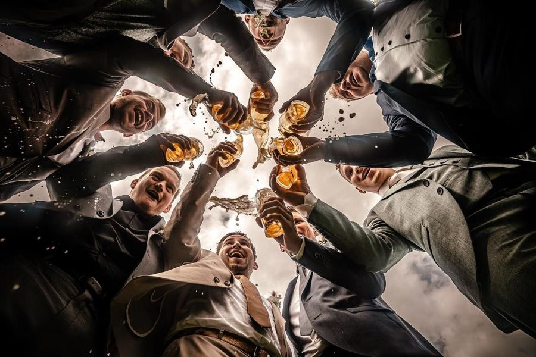
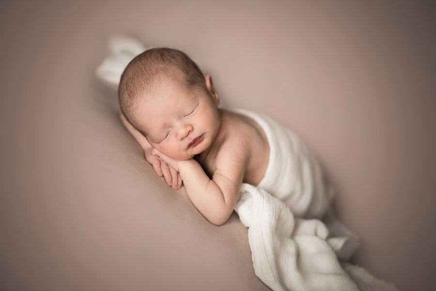
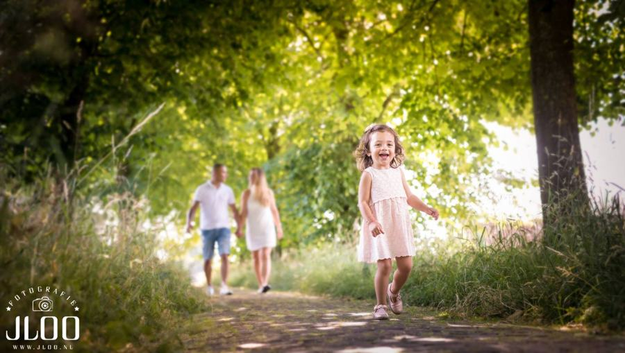
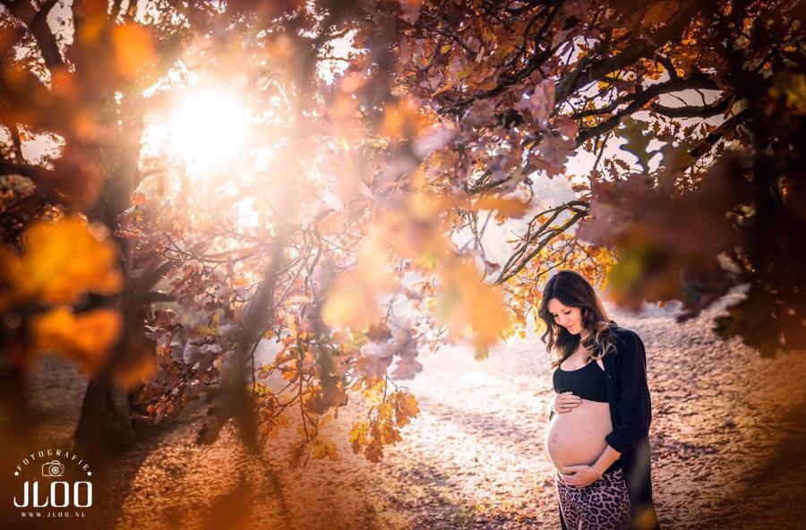

Prijzen
Helder geprijsd. Met zorg gemaakt.
Bij elk pakket krijg je alle onbewerkte foto’s in de hoogste resolutie, zonder tekst of logo. Je kiest zelf je favorieten voor de nabewerking.

Bruiloft
Bruidsreportage
vanaf€1.700
- 6 uur fotografie · €1.700
- 12 uur fotografie · €2.000
- Inclusief drone-beelden
- 200 bewerkte foto’s naar keuze
- 4.000 tot 8.000 onbewerkte foto’s
- Sneak preview binnen een week
Extra uur €130 · fotoselectie door ons €650 (minimaal 1.000 bewerkte foto’s) · trouwalbum in linnen of leer €590 · mini-album €35 · USB €30 · harde schijf met alle RAW- en JPG-bestanden op aanvraag · videograaf via DeTrouwClip.nl

Newborn
Newbornshoot
studio€350
- Met papa, mama, broertje of zusje
- 10 bewerkte foto’s naar keuze
- 300 tot 1.000 onbewerkte foto’s
- Ongeveer 2 uur, 7 tot 20 dagen na de geboorte
Extra bewerkte foto €20 · mini-album €35 · alle foto’s op USB €30

Gezin
Gezinsshoot
locatie€250
- 1 tot en met 5 personen
- 5 bewerkte foto’s naar keuze
- 150 tot 1.000 onbewerkte foto’s
- Op een mooie locatie in de regio
Extra bewerkte foto €20 · alle foto’s op USB €30

Portret
Portretshoot
studio€100
- 3 bewerkte foto’s naar keuze
- Alle onbewerkte foto’s
- In onze studio in Herpt
Extra persoon €25 · extra bewerkte foto €20 · alle foto’s op USB €30

Zwangerschap
Zwangerschapsshoot
tariefOp aanvraag
- Studio of buitenlocatie
- Met partner en kinderen
- Te combineren met een newbornshoot
We maken graag een voorstel op maat.
Goed om te weten
Zo werkt het.
Hoe verloopt de levering?
Na betaling ontvang je per e-mail alle onbewerkte foto’s in de hoogste resolutie. Je geeft de nummers van je favorieten door en wij gaan aan de slag met de nabewerking. Dat duurt meestal 1 tot 5 weken.
Hoe lang bewaren jullie mijn foto’s?
Maximaal een jaar. Zorg dus dat je ze op tijd downloadt en een back-up maakt.
Kan ik later nog foto’s laten bewerken?
Ja, zolang we de bestanden nog hebben. Een extra bewerkte foto kost €20.
Verzorgen jullie ook afdrukken?
We leveren digitale bestanden, een USB-stick, mini-album of trouwalbum. Afdrukken laat je zelf maken; we geven graag tips voor een goede fotoprinter.
Kennismaken
Vertel ons over jullie moment.
Een trouwdatum, een uitgerekende datum of gewoon een idee: stuur ons een berichtje. We reageren binnen 24 uur en nodigen jullie graag uit voor een kop koffie in de studio.
gemeente Heusden